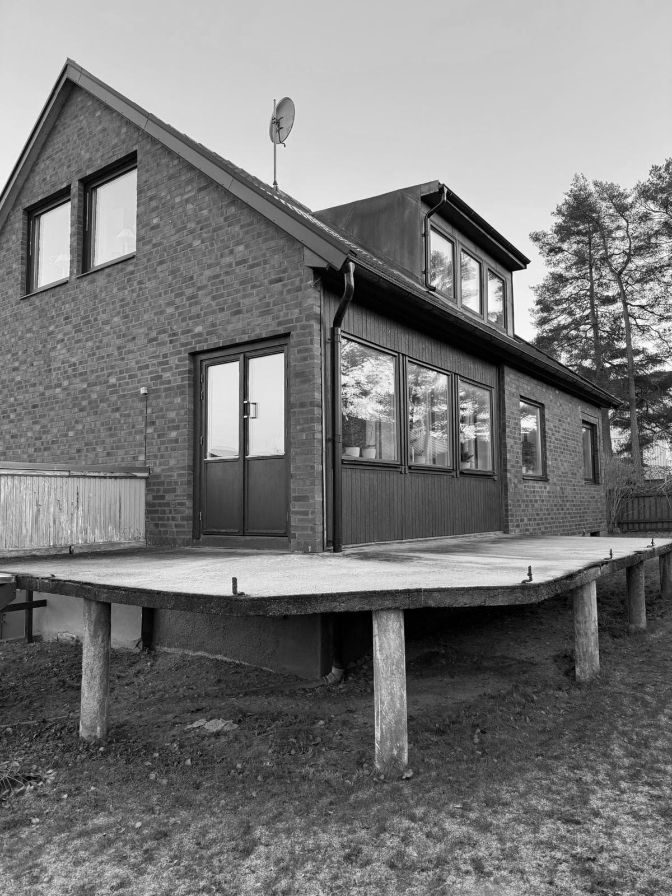
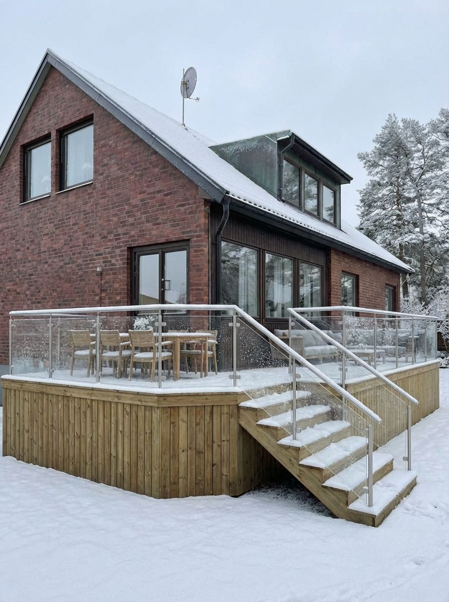
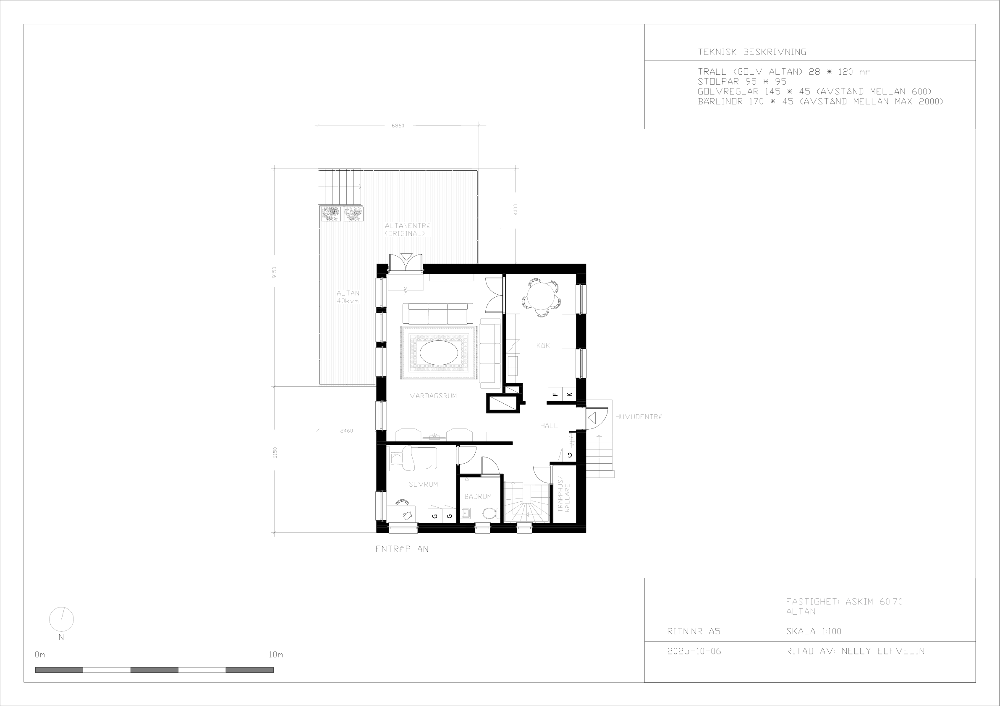
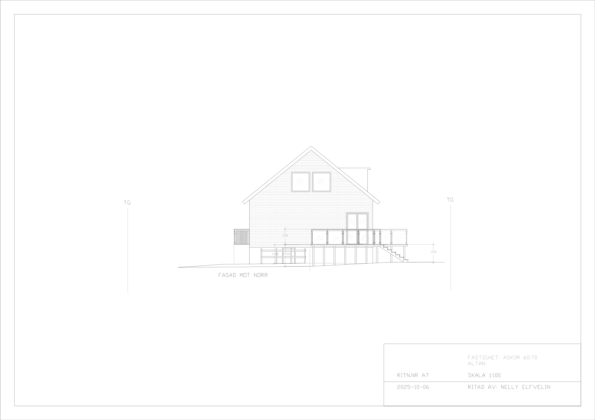
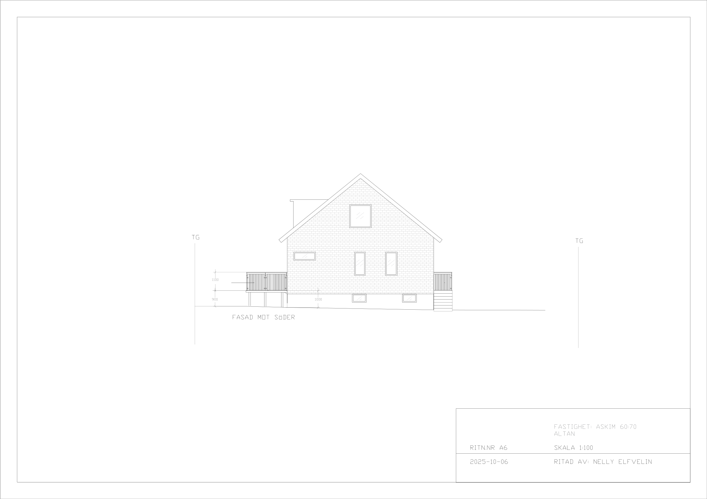
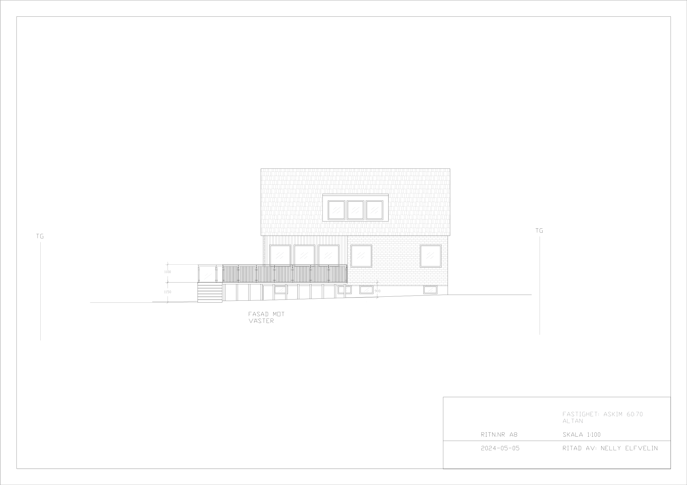

Riv- och bygglov för en altan. Från betonggrund till träkonstruktion , ett privatprojekt i Askim.
Rita om och utöka altanen samt skapa en rymligare och mer tillgänglig trappa. Altanen med träpanel löper runt hörnet för att ge möjlighet till fler soltimmar. Glasat räcke mot trädgården och träpanel mot gatan för att minska insyn.





